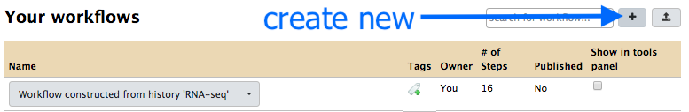
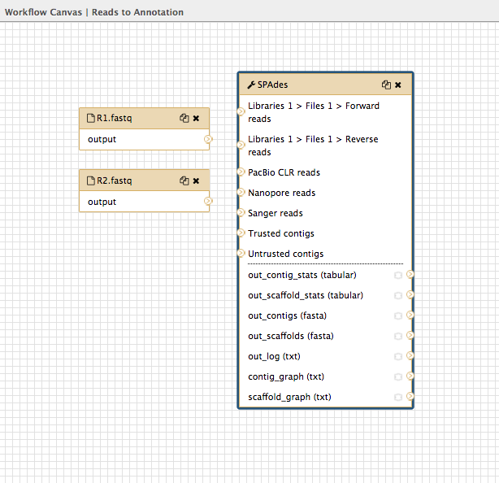

Galaxy workflows
A workflow is a chain of analysis steps. In Galaxy, we can create a workflow from an existing analysis history, or we can create one visually by adding tools to a canvas.
This tutorial covers building a workflow to analyse a bacterial genome, from input FASTQ sequencing reads to assembly, annotation, and visualization.
Start
Log in to your Galaxy instance (for example, Galaxy Australia, usegalaxy.org.au).
Import a history of data files:
- Click on the
History cog
- Select
Import from File - In the box called
Archived History URL , paste in this link address to the Galaxy history of input files:
https://swift.rc.nectar.org.au:8888/v1/AUTH_377/public/Microbial_tutorials/Galaxy_history_input_files.tar.gz
- Click
Import History - Wait a few seconds.
- Click on the “View all histories” button

- See if the Galaxy history has been imported: it will be called
imported from archive: Data - Above that pane, click on the
Switch to button. - Then click
Analyze Data (in the top menu bar). -
You should now have a list of five files in your current history.
-
Re-name this history “Workflows”.
Build a workflow
We will first write a workflow for genome assembly.
- In the top menu bar in Galaxy, click on “Workflow”.

- Click on the plus button.

-
Under
Workflow Name: put in “Reads to Annotation”. -
Click
Save -
This will bring up the “Workflow Canvas”, a grid where you can arrange the workflow.
Add inputs
-
In the Tools panel, click
Inputs: Input datset twice (at the very top of the list). -
A box will appear: drag it to the left and there will be another box underneath it. Drag this also to the left. Your workflow canvas should look like this:

-
Click on the first box. Look in the right hand panel (now called “Details”). Under
Label type inR1.fastq . Press Enter for the change to be saved. -
Repeat for the second input dataset box, naming that one
R2.fastq .
Add the tool “spades”
- In the tools panel, search for
spades and click on the tool name. This puts the spades box onto the workflow canvas.

-
Click on the spades box and look in the Details pane on the right. This shows all the options in spades. Choose:
-
Run only Assembly : Yes [the Yes button should be darker grey] Kmers to use separated by commas: 33,55,91 [note: no spaces]Coverage cutoff: auto
Join inputs to the tool
Now tell spades which input files to use.
-
Look at the input dataset box called
R1.fastq and find the small arrow: > -
Click on this and drag the arrow over to the spades box input arrow > next to “Libraries 1 > Files 1 > Forward reads”.

- Repeat for the dataset box
R2.fastq , joining to the spades box next to “Libraries 1 > Files 1 > Reverse reads”.
Save it and run
- Click on the cog at the top right of the workflow canvas and “Save”.
- Click the cog again and choose “Run”.
-
This brings up a window where you specify the input datasets to use in the workflow.
- Under
Step1: Input dataset choosemutant_R1.fastq . - Under
Step2: Input dataset choosemutant_R2.fastq .
- Under
-
Click
Run workflow .
This will run the workflow (spades) and save the output to the top of your current history in the right hand panel.
- View some of the output files with the eye icon to check that the workflow (in this case, just spades) ran correctly.
Add to the worfklow
We will add another tool to the workflow.
-
Go to the top Galaxy panel and click “Workflow”.
-
Your workflow
Reads to Annotation should be in the list. Click on the drop-down arrow next to this workflow and chooseEdit . -
This will bring up the Workflow Canvas where we can add more inputs and tools.
-
In the Tools panel search for
Prokka and click on the tool name. This will add a Prokka box to the workflow canvas. -
We need to tell Prokka which genome assembly) to annotate. Join the spades output called
out_contigs(fasta) to the Prokka input calledContigs to annotate . -
Click on the Prokka box and change some of the settings in the right hand Details panel:
- Set the following parameters (leave everything else unchanged):
Locus tag prefix (–locustag) : PForce GenBank/ENA/DDJB compliance (–compliant) : NoSequencing Centre ID (–centre) : VUse genus-specific BLAST database No
-
Click on the cog to the top right of the workflow canvas to save.
-
Click on the cog again to run.
- Again, choose the input files:
mutant_R1.fastq andmutant_R2.fastq , and then clickRun workflow .
- Again, choose the input files:
-
The output from the workflow (files from spades and prokka) will appear at the top of the History panel.
-
Click on the eye icon for some files to verify the workflow ran correctly.
Add more to the workflow
We will add a visualization tool to view the genome annotation.
-
Go to the top Galaxy panel and click “Workflow”.
-
Your workflow
Reads to Annotation should be in the list. Click on the drop-down arrow next to this workflow and chooseEdit . -
This will bring up the Workflow Canvas where we can add more inputs and tools.
-
In the Tools panel, search for
JBrowse and click on JBrowse genome browser. This will add a JBrowse box to the workflow canvas. -
Click on the JBrowse box. In the Details pane:
- Under
Reference genome to display choose Use a genome from history. -
For
Produce a Standalone Instance select Yes. -
For
Genetic Code choose 11: The Bacterial, Archaeal and Plant Plastid Code. -
Under
JBrowse-in-Galaxy Action choose New JBrowse Instance. -
Click
Insert Track Group -
Under
Track Category type in gene annotations. -
Click
Insert Annotation Track -
For
Track Type choose GFF/GFF3/BED/GBK Features -
Under
JBrowse Track Type[Advanced] select Canvas Features. -
Under
Track Visibility choose On for new users.
- Under
-
Now we need to tell JBrowse the input files to use.
-
Join the Prokka output
out_fna (fasta) to the JBrowse inputSelect the reference genome -
Join the Prokka output
out_gff (gff) to the JBrowse inputTrack Group 1…
-

-
Click on the cog to save; again to run; choose input files;
Run workflow ; examine output files in current history. -
The workflow will now assemble and annotate the genome, and create a JBrowse view of the annotations.
-
JBrowse will produce one output file.
- Click on the eye icon to view.
- In the centre drop down box, choose contig 1.
- Under “Available Tracks” on the left, tick the boxes.
- Zoom in and out with the plus and minus icons.
- The blue blocks are the genome annotations.

Summary
-
Our workflow is now:
FASTQ sequence reads to Spades for assembly- Spades
contigs fasta file to Prokka for annotation - Prokka
fasta file and.gff file to JBrowse for visualisation.
-
We can re-run this workflow with different input FASTQ files.
Other workflow options
Saving outputs
To save only some output files:
- Go to the workflow canvas.
- Find the star next to the outputs.
- Click on the star for any outputs you want to save.

To save these starred files from the workflow output as a new history:
- Before you click
Run workflow , tick the box above toSend results to a new history .
Import a workflow
To import an existing Galaxy Workflow:
- Go to the Workflow tab in the top panel.
- At the top right, click on
Upload or import workflow .
Extract a workflow
You can extract a workflow from an existing Galaxy history.
- Go to your Galaxy history
- Click on the History cog icon and choose “Extract Workflow”.
- Give it a name and click
Create Workflow . - To edit, go to the Workflow tab, select the workflow, and choose “Edit” from the drop down menu. You can then edit the steps on the Workflow Canvas.
A note on workflow tabs
We have been using the top Workflow tab. There is another tab at the bottom of the tool panel called Workflows. Click on
To return to the main Galaxy window click on the
What’s next?
To use the tutorials on this website:
- ← see the list in the left hand panel
- ↖ or, click the menu button (three horizontal bars) in the top left of the page
You can find more tutorials at the Galaxy Training Network: